Chromaseq has a basic chromatogram viewer built in. To see the chromatgrams for a particular sequence, touch the View Chromatograms tool ( ) on a sequence. For example, if you touched on the top sequence in the Chromatograms example from the tutorial:
) on a sequence. For example, if you touched on the top sequence in the Chromatograms example from the tutorial:
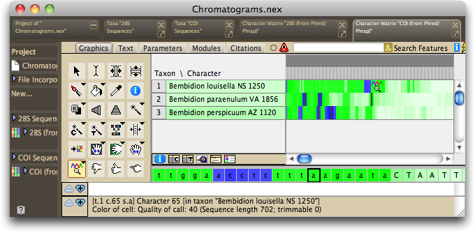
The chromatogram viewer should appear, centered approximately on the base you touched:
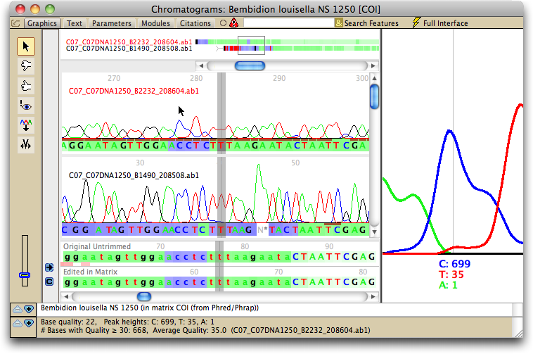
By default, this chromatogram will open up in a new, separate window. If you wish to change the behavior so that it opens up in a separate tab within the same window as the matrix, then touch on the View Chromatograms tool icon ( ) and a menu will appear with an "Open in new window" toggle, and you can uncheck that option.
) and a menu will appear with an "Open in new window" toggle, and you can uncheck that option.
The default components of the chromatogram viewer are shown below:
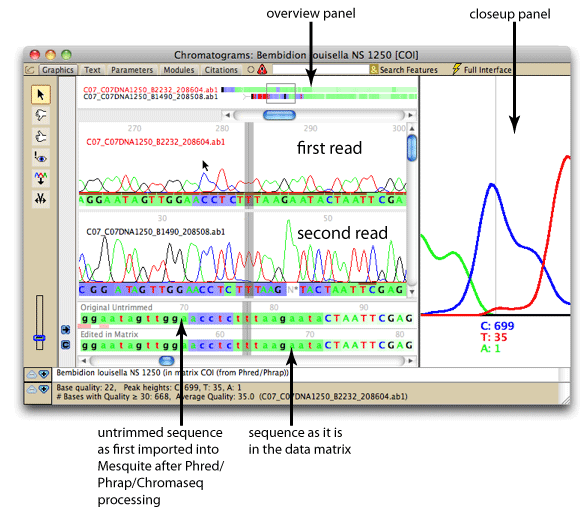
If the underlying sequence in the Mesquite's matrix has been reverse-complemented relative to how it came out of Phrap originally, a panel on the left will show up in dark orange rather than gray:
Sequence not reverse-complemented 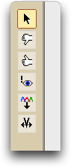 |
Sequence reverse-complemented 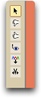 |
There are many options for the elements that are displayed, and how they are displayed. For example, you can choose to hide the overview panel, or the closeup panel, or show other panels not illustrated above. Some pre-built styles exist that set a number of options all at once; these are available in the Styles submenu of the Chromatograms menu.
There are various options changing the display of the chromatograms. Once you have set up the display to meet your needs, you may wish to choose "Save Current Settings as Defaults" from the Chromatograms menu, which will establish your display settings as those to be used for future chromatograms you will view. To have these settings override even those stored in a file, choose "Ignore File Settings; Use Defaults" first, and then choose "Save Current Settings as Defaults".
There are various tools for navigating quickly through the chromatograms. You can also change the base calls from within the chromatogram viewer.
Chromatogram Panel
The chromatogram panel shows the chromatograms for individual reads, underneath which are the sequences from the contigs. The chromatograms themselves show Phred's base calls under each sequence, with the background colors of each base being the quality score as judged by Phrap.
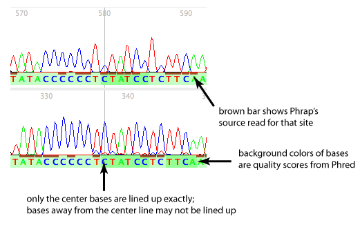
In addition, for each site, one of the reads will have a brown bar under the read. This is the "source read", which is the primary read Phrap used to make its base call.
The names of the reads are the same as the original chromatogram file names. If they are colored in red, then they are the 5' end of the read is on the right, and the read goes from right to left; if in black, then the orientation is from left to right:
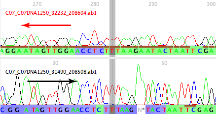
Close-up Panel
The closeup panel shows a magnified view of the peaks in one read; it shows the peaks where the mouse is positioned.
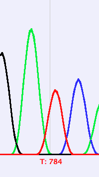
The region of the read being shown in the close-up panel is indicated by a pale blue box behind that region of the read, as shown below.
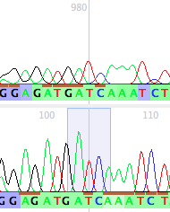
By default, the close-up panel shows a close-up view of source read for the base on the center line of the window, that is, the primary read that Phrap used to make the base calls for the center base. If you wish to see other peaks, potentially in other reads, then touch on their peaks in the main chromatogram panel, and they will appear in the close-up panel. Or, you can hold down the Option key and hover over a peak, and it will appear in the close-up panel.
To keep the close-up panel focused on one particular read, turn off Chromatograms>Show>Close-Up Panel Shows Source Read. Then, touch the peaks of that read, and the close-up panel will show the center base of that read, and will continue to show that read as you navigate. If, however, you deselect the reads as the focus of the close-up panel, then hover over any read, the closeup panel will show that region over which you are hovering. To deselect the reads, touch on the small gray horizontal region immediately above the horizontal scroll bar, indicated by the arrow in the figure below.
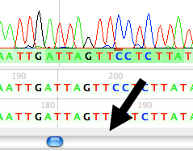
Overview Panel
The overview panel shows a bird's eye view of all of the reads in the contig. The little box shows the current view in the chromatogram panel. You can navigate by grabbing the box and dragging it around.
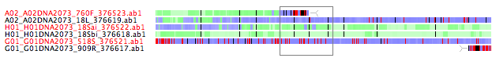